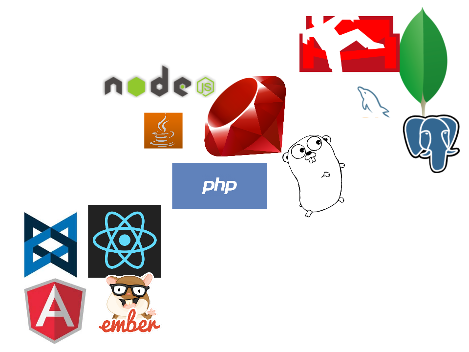

The Little Schema
With David Banham
Schemaless data isn't
NoSQL databases are usually schemaless.
That doesn't mean your data is.
It just means the database won't help you with it.
Stop reinventing wheels


Enter JSON Schema!
"persisted_at": {
"description": "When the document was persisted to the database.",
"example": "2012-01-01T12:00:00Z",
"format": "date-time",
"type": "string"
}
"email": {
"description": "Email address of the member",
"example": "nickjones@example.com",
"format": "email",
"type": "string",
"maxLength": 100
}
"card_type": {
"type": "string",
"example": "Mastercard",
"options": [
"VISA",
"Mastercard",
"AMEX",
"Diners"
]
}
Now for Hyper Schemas!
"description": "A Transaction occurs when an order is placed or a refund is processed.",
"links": [
{
"description": "Create a new transaction.",
"href": "/transaction",
"method": "POST",
"rel": "create",
"schema": {
"required": [
"order_id",
"category",
"member",
"transaction_date",
"product_description",
"payment",
"points",
"cinema",
"vouchers",
"commission",
"delivery"
],
Now you have super powers.
* Automatic generation of documentation
* Automatic server-side validations of input from clients
* Automatic generation of API client libraries in multiple languages
* Simpler design of the API by making inconsistencies easier to spot
Docson
http://lbovet.github.io/docson/index.html#/docson/examples/example.jsonprmd
More goodies!
Get involved
https://github.com/Prismatik/document_migratorhttps://github.com/Prismatik/document_validator